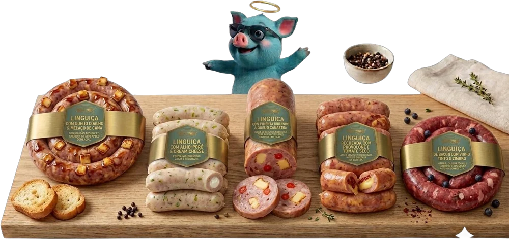

Para a grelha
Linguiças
Da toscana ao queijo Canastra, combinações que fazem o churrasco ganhar conversa.
- Toscana com alho e vinho branco
- Queijo coalho e melaço
- Pimenta-biquinho e Canastra
- Alho-poró e cream cheese
- Provolone e tomate seco
- Calabresa com erva-doce